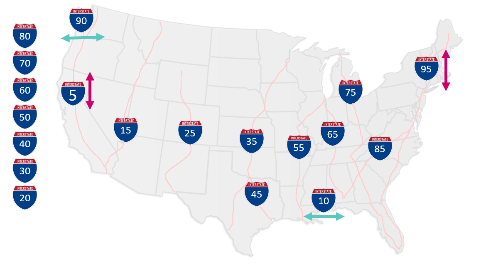
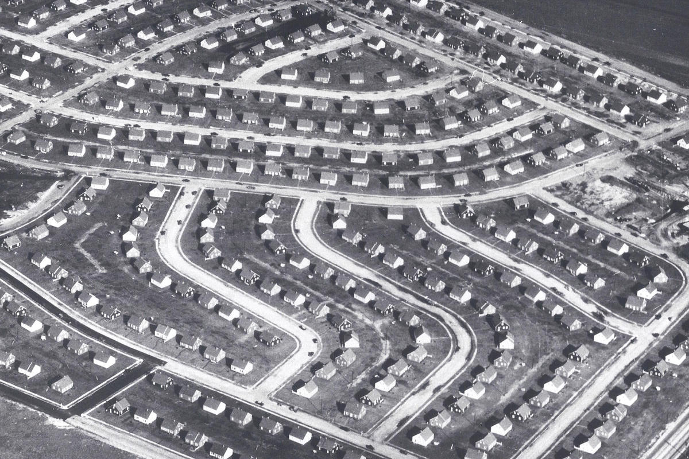
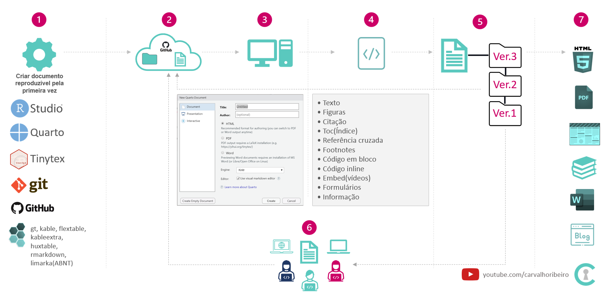
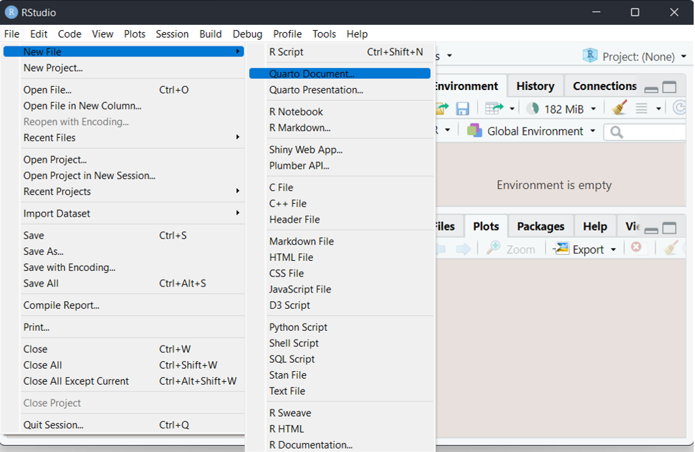
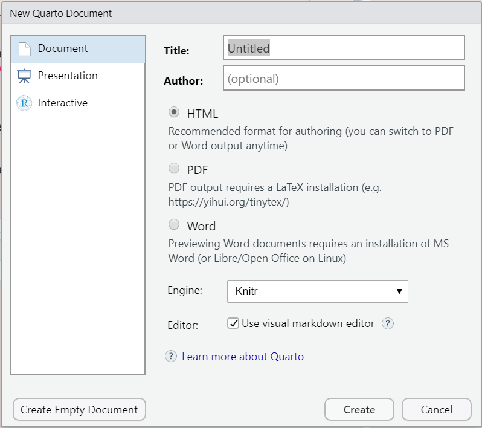

Como comunicar dados em artigos técnicos no R - Quarto
Vídeo tema para este post em Como comunicar dados em artigos técnicos no R - Quarto
O que é comunicação de dados
Em um contexto mais geral, seria o processo relativo a transação de dados e ou informações entre 2 ou mais agentes.
Em um contexto mais específico que será tratado nesse post é a demonstração de resultado técnico ou experimento em documentos(e.g. dossiê, poster scientific, blog, livro etc)
Muito mais do que um documento, são ideias.
Qual o objetivo
Dar suporte para ação adequada/eficiente em situações específicas usando sinais que podem ser visuais como escrita, fórmulas, gráficos e código reproduzível.
Facilitar a aplicação do conceito techinical writing , facilitar a compreenção e por consequencia a busca por melhorias.
De onde vem a demanda
Necessidade de compreenção, reprodução ou melhoria de um processo.
Escasses de recursos vs necessidade de melhoria da produtividade global dos fatores.
Necessidade de transparência, credibilidade e consistência.


Como fazer
- Ferramenta: Quarto, rmarkdown, jupyter notebook, word, excel.

Conceito: Uso de elementos que facilitem processo de comunicação como equations, citations, cross-reference, footnotes, embedded code, code chunck, inline code.
Para reproduzir os códigos abaixo serão necessários os pacotes tidyverse e quarto
Para instalar o quarto pub clique no link acima e siga os procedimentos(next>next>next). Após a instalação a opção criar um novo documento quarto vai aparecer automaticamente no RStudio.


- Código descrito no vídeo aqui:
Pra onde vai quem é o cliente
- Publicação intranet
- Github
- Zenodo
- Kaggle
- Paperswithcode
- NCBI - National Center for Biotecnology Information
- Serviço Brasileiro de Respostas técnicas
- Blog/Books/Poster
Qual o resultado
Melhoria da articulação permitindo expor com mais clareza os detalhes técnicos e os benefícios a respeito da ideia proposta.
Reutilização da ideia original (ao invés de partir do zero) mas incrementando melhorias, reduzindo tempo de implementação e se livrando de obstaculos ao longo do caminho consequentemente poupando recursos o que remete a continuidade e consistência.
Incremento de qualidade e acessibilidade ao conheicmento, bens ou serviços resultando da melhoria das padrão de vida pessoas.